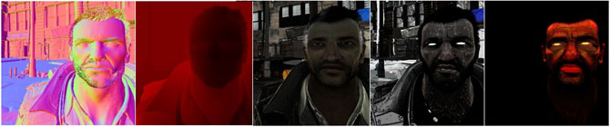
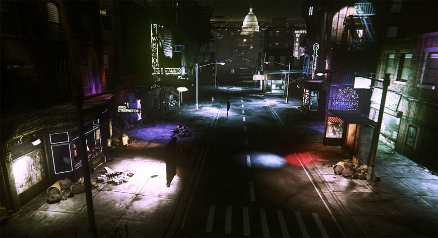
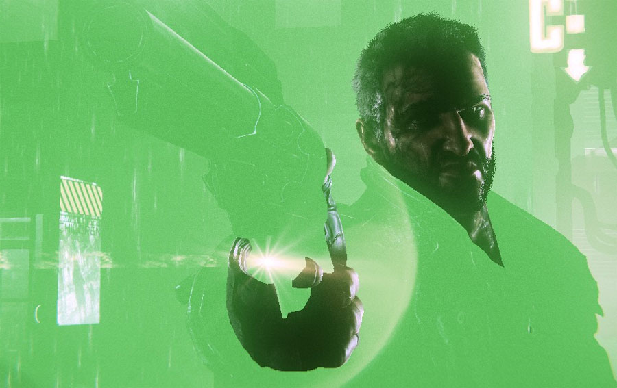

UDN
Search public documentation:
DeferredShadingDX11
日本語訳
中国翻译
한국어
Interested in the Unreal Engine?
Visit the Unreal Technology site.
Looking for jobs and company info?
Check out the Epic games site.
Questions about support via UDN?
Contact the UDN Staff
中国翻译
한국어
Interested in the Unreal Engine?
Visit the Unreal Technology site.
Looking for jobs and company info?
Check out the Epic games site.
Questions about support via UDN?
Contact the UDN Staff
UE3 Home > DirectX 11 in Unreal Engine 3 > Deferred Shading in DirectX 11
UE3 Home > Lighting & Shadows > Deferred Shading in DirectX 11
UE3 Home > Lighting Artist > Deferred Shading in DirectX 11
UE3 Home > Lighting & Shadows > Deferred Shading in DirectX 11
UE3 Home > Lighting Artist > Deferred Shading in DirectX 11
Deferred Shading in DirectX 11
Document Changelog: Created by Daniel Wright.
Overview
Visualization of the material properties stored in GBuffers. (Click for full size)  Lights rendered with deferred shading are about 10x faster than lights rendered with forward lighting. In the GDC 2011 tech demo, the intro scene had 123 dynamic lights, and all lighting was done using deferred except on character skin and hair. Note that deferred shading does NOT speed up dynamic shadowing, which is already deferred in UE3, so this does not allow you to have hundreds of dynamically shadowing lights.
Screenshot of the GDC 2011 tech demo, showing the diffuse contribution of 123 dynamic lights being used to light the characters and environment.  Screenshot of the GDC 2011 tech demo, where pixels lit with deferred shading have been colored green.  For the most part deferred shading is intended as a transparent optimization to be used in conjunction with standard forward lighting. There currently aren't any tools to show which parts of the scene are using deferred and which are using forward but those would be really useful and are planned.
Restrictions
- Material is opaque, uses the Phong lighting model, does not use subsurface scattering
- The mesh uses one of the supported lighting channels (Dynamic, Cinematic 1-3). BSP, static and dynamic are all treated as the same channel.
- The light is a movable point, spot or directional light using one of the supported lighting channels (Dynamic, Cinematic 1-3). BSP, static and dynamic are all treated as the same channel.
- Material diffuse values are clamped between 0 and 1
- Material specular values are clamped between 0 and 1
- Material specular power is clamped between 0 and 500
Cinematic lighting
Also, lights using bNonModulatedSelfShadowing or bSelfShadowOnly have a fast path using deferred shading.

{kind=link}